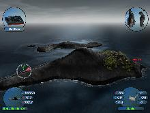
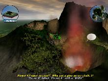

Scorched 3D is a game based loosely (or actually quite heavily now) on the classic DOS game Scorched Earth "The Mother Of All Games". Scorched 3D adds amongst other new features a 3D island environment and LAN and internet play. Scorched 3D is totally free and is available for both Microsoft Windows and Unix (Linux, FreeBSD, Mac OS X, Solaris etc.) operating systems.
 
You can pick up the game and begin playing very quickly. Then, when/if you are interested, you can poke in the dimmer recesses of the game and get into the strategy (or just ignore it altogether!).
At its lowest level, Scorched 3D is just an artillery game with two+ tanks taking turns to destroy opponents in an arena. Choose the angle, direction and power of each shot, launch your weapon, and try to blow up other tanks. That's basically it.
But Scorched 3D can be a lot more complex than that, if you want it to be. You can earn money from successful battles and use it to invest in additional weapons and accessories. You can play with up to twenty four other players at a time, mixing computer players with humans. There's a variety of changing environmental conditions and terrains to be dealt with. After the end of each round (which ends when everybody dies or there's only one person left), you get to buy stuff using the prize money you won from previous matches.
Quickstart guide - Guides you through the first basic steps.
Aiming guide - Guides you through controls used for aiming.
Dialog guide - Guides you through the on screen dialogs.
Camera guide - Guides you through moving the camera angle.
Player Options guide - Guides you through all available options when choosing a player.
Accessory guide - Guides you through all available accessories that can be bought.
Keys guide - Scorched3D Keyboard Reference.
Online/server guide - Guides you through joining an online game or starting a server.
Command line options - The command line options for Scorched3D.
Network ports - The network ports used by Scorched3D.
Modelling - How to create custom models.